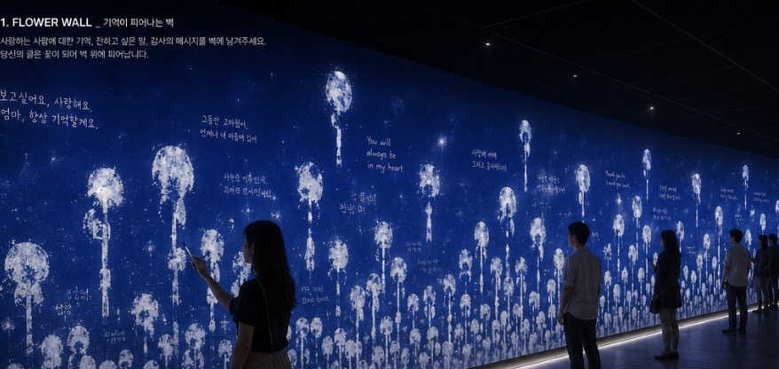
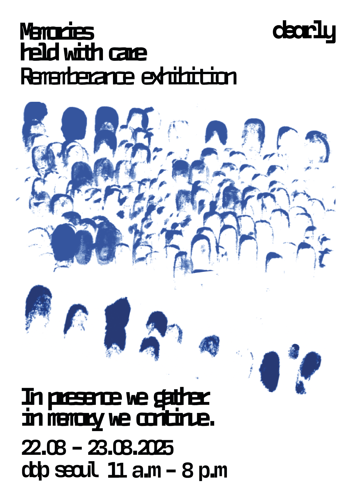
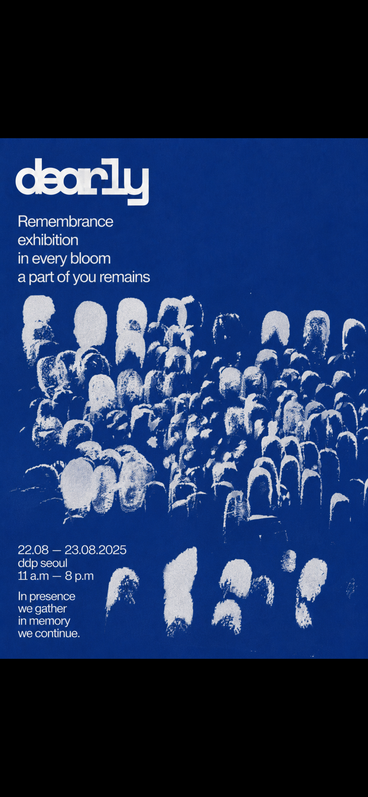
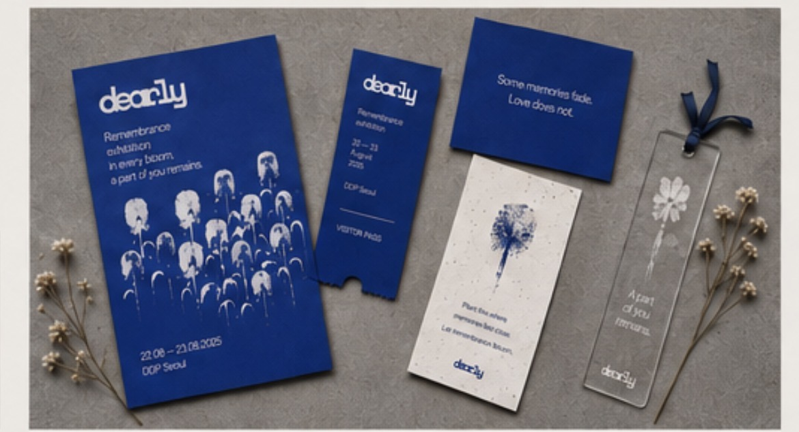

Exhibition identity · environmental graphics · print
Dearly

01 · Identity in public space
Remembrance carried through a field of flowers.

02 · Visual system
A mark becomes a bloom. Many blooms become a memory.



22–23 August 2025 · DDP Seoul
A shared place for remembrance.
Dearly is a remembrance exhibition identity built around flower-like imprints. Each individual mark holds the trace of a person; gathered together, the marks become a growing field and transform private memory into a shared public image.
The visual system moves from typography and printed matter into environmental graphics and an interactive flower wall. Deep blue creates a quiet space for reflection, while the repeated white blooms suggest presence, absence, and the way memory continues through the people who remain.